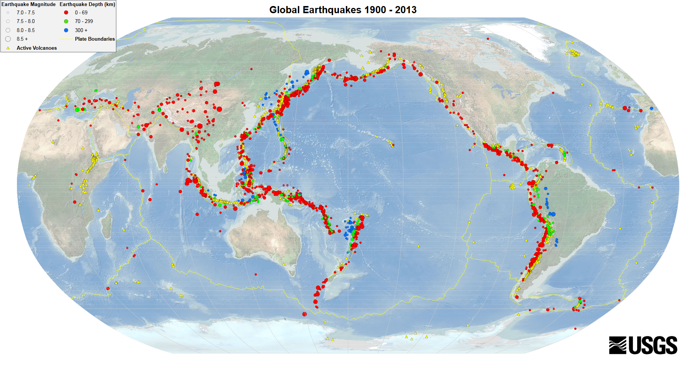

大地形の形成
営力
世界地図や地球儀をみると、地球の表面がでこぼこしているのがわかります。このでこぼこは、自然の力である営力によって形成されました。営力には、地球内部の力による内的営力（地殻変動等）と、風雨、河川、氷河、波浪等の力による外的営力があります。地球の地表面には、大規模な平野、山脈、海溝などの大地形と、主として外的営力の影響をうけて発達する小地形に分けられます。
大地形の形成とプレート運動
地球は、下の図のように、核(外核と内核):D、下部マントル:C、上部マントル:B、地殻:Aのように構成されます。プレートは、地殻（陸は30~40km、海洋は約10kmの厚さ）と上部マントルの最上部数10kmを指します。
地球内部の構造
世界には10枚程度のプレートがあり、下の図のように分布しています。プレートは、地球内部のマントル対流によりゆっくりと流動し、境界を形成します。大地形の発達を説明するこの理論をプレートテクトニクスといいます。

主要なプレート(Public Domain)
かつての地球は、パンゲアとよばれる一つの地塊で、プレート運動によって現在の大陸となりました。よく見ると、アフリカの西側の海岸線と南アメリカの東側の海岸線がパズルのようにくっつきそうなのがわかります。Animated Maps: Tectonic Plate Movementでは、5億5千万年前から現在までのプレートの移動を動画でみることができます。
境界には、下の図のように、狭まる境界、広がる境界、ずれる境界の3つがあります。狭まる境界は、プレート同士の力が→←のように働くものを指します。広がる境界は、プレート同士の力が←→のように働くものを指します。ずれる境界は、プレート同士の力が↑↓のように働くものを指します。狭まる境界では、プレート同士がぶつかり合います。海洋プレートが沈み込む範囲を沈み込み帯とよび、大陸プレート同士が衝突し山脈を形成する範囲を衝突帯とよびます。広がる境界は、プレート同士が離れ合う範囲です。海底では、マントルがわきだし海底に海嶺とよばれる大山脈が形成されます。東アフリカの大地溝帯や紅海もこの種の境界と考えられています。ずれる境界は、プレートとプレートが横にずれあう境界で、サンアンドレアス断層が有名です。サンアンドレアス断層は、カリフォルニア州からメキシコまで縦断しており、その総延長は約1300kmです。それでは、実際にGISを用いて、境界をみてみましょう。
プレートの境界(原図は、Public Domain)
GISで境界を見てみよう!
造山帯と安定陸塊
地球の地形は、過去から現在までの造山運動によって、新期造山帯、古期造山帯、安定陸塊に分類できます。下の図の赤線は、新期造山帯（中生代・新生代以降の造山運動による）の分布を示します。新期造山帯は、アルプス・ヒマラヤ造山帯と環太平洋造山帯等があります。この周辺は、地殻変動が活発で、地震が頻発したり、火山が多く分布します。下の図の青線は、古期造山帯（古生代〜中生代の造山運動による）を示しています。古期造山帯は、かつてのプレート境界や運動によって形成されたまのです。現在、内的営力の影響は小さくなったもの、外的営力の影響を受け続けるため、比較的なだらかな山地となります。北米のアパラチア山脈、ユーラシア大陸の中央を縦断するウラル山脈等が、古期造山帯にあたる。
新期造山帯、古期造山帯、楯状地、卓状地の分布図
※上の図は、GISの図に置き換える予定です 。現在は用意していないため、教科書等で確認してください。
過去から現在を通じて、地殻変動が不活発な地域の地形を、安定陸塊とよびます。安定陸塊では、水平に堆積した地層がゆっくりと隆起（造陸運動）した台地や平野がみられます（卓状地）。卓状地には、北アメリカの中央平原、中央シベリア高原、東ヨーロッパ平原などがあたります。パリ盆地にのように、堆積した地層が傾斜しかつ、地層によって硬さが異なる場合は、侵食の度合いに差が生じるため、ケスタとよばれる地形になります。ハドソン湾やバルト海の周辺では、西洋の楯を伏せたような地形（楯状地）が分布します。楯状地は、プレート境界から離れており、先カンブリア時代の地層が露出しています。
ケスタ地形の概観図（Public Domain）
侵食輪廻
安定陸塊や造山帯では、外的営力による侵食をうけ、構造平野（安定陸塊のうち侵食によって形成された平野）や準平原（急峻な山脈等が平原化する）が形成されます。地形が隆起し、侵食をうけ、準平原が発達する一連のプロセスを侵食輪廻とよびます。
地殻変動と災害
下の地図は、地震と火山の分布を示したものです。狭まる境界やその周辺では、地震が頻発し、火山が発達しています。地震の震源地が海底の場合、津波を発生させ沿岸の街に被害を及ぼすことがあります。地震には、内陸の断層によるものもあります。火山、地震、津波については、次の教材で解説しています。

地震と火山の分布（Public Domain）